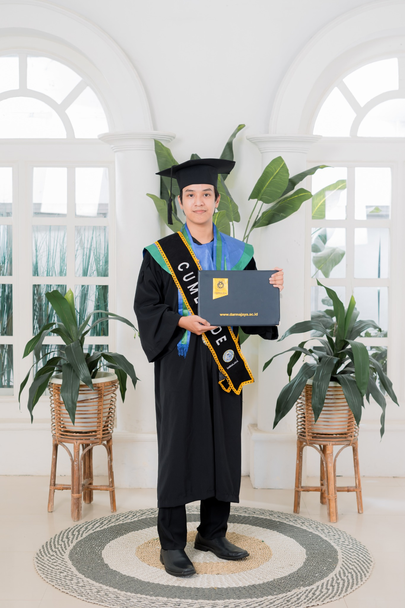

Logic × Creativity
Menyatukan pendekatan teknis, visual, dan komunikasi dalam setiap karya.
Lulusan S1 Teknik Informatika dengan passion di IT Support, Web Development dan Content Creation. Menggabungkan logika, desain, dan kreativitas untuk menciptakan pengalaman digital yang bermakna.
Creative technologist yang memadukan solusi teknis, desain antarmuka, dan produksi konten digital.
Saya percaya teknologi terbaik bukan hanya yang berjalan, tetapi yang mempermudah hidup orang lain.
Saya adalah lulusan S1 Teknik Informatika dari Institut Informatika dan Bisnis Darmajaya dengan IPK 3,85, serta pemegang sertifikasi kompetensi BNSP Junior Web Developer dan Software Developer.
Pengalaman saya mencakup pengembangan dan pemeliharaan website, UI/UX, desain grafis, pengelolaan publikasi digital, produksi konten YouTube dan TikTok, serta pelayanan pelanggan. Saya terbiasa bekerja secara teliti, adaptif, dan kolaboratif.
Kenali perjalanan sayaMenyatukan pendekatan teknis, visual, dan komunikasi dalam setiap karya.
Mengembangkan dan merawat solusi digital yang efektif.
Merancang pengalaman visual yang mudah digunakan.
Menghasilkan konten digital yang relevan dan menarik.
Beragam kemampuan yang saya gunakan untuk mewujudkan ide menjadi produk dan konten yang bernilai.
Implementasi aplikasi, pengembangan antarmuka, pemeliharaan website, dan pemecahan masalah teknis.
Merancang tampilan yang intuitif, terstruktur, konsisten, dan menarik secara visual.
Dari riset tren hingga editing dan publikasi untuk YouTube, TikTok, dan komunitas digital.
Kemampuan interpersonal yang mendukung kualitas hasil kerja dan kolaborasi lintas bidang.
Beragam peran yang membentuk saya menjadi pribadi yang terstruktur, kreatif, dan berorientasi pada solusi.
Proyek pengembangan dan karya kreatif yang merepresentasikan cara saya menggabungkan fungsi dan visual.
Produksi video YouTube dan TikTok seputar update, review skin, dan tren komunitas Mobile Legends.
Pengembangan tampilan dan pengelolaan website konferensi, publikasi informasi acara, serta perbaikan antarmuka.
Sistem presensi siswa berbasis React Native dan Laravel dengan validasi lokasi menggunakan Geolocation dan algoritma Haversine, rekap kehadiran, pengajuan izin, serta dashboard admin dan guru.
* Visual antarmuka di atas merupakan ilustrasi konsep untuk portofolio, bukan tangkapan layar dari produk sebenarnya.
Bekal akademik, pengakuan kompetensi, dan keterlibatan organisasi yang mendukung perjalanan profesional.
Institut Informatika dan Bisnis Darmajaya
Mengembangkan aplikasi presensi mobile untuk siswa dengan validasi lokasi menggunakan geolocation dan algoritma Haversine, dilengkapi dashboard admin dan guru, pengajuan izin, serta rekap kehadiran secara digital.
Lihat repositori kampus
Empat bukti kompetensi dan pengalaman profesional, disajikan dalam satu galeri. Klik foto untuk memperbesar sertifikat dalam pop-up.
JUNIOR WEB DEVELOPER
Kompeten sebagai Pengembang Web Pratama pada bidang pemrograman dan pengembangan perangkat lunak.
SYSTEM ANALYST
Kompeten pada bidang Software Development dengan kualifikasi System Analyst.
GOODWOOD PUBLISHING
Program magang semester ganjil T.A. 2024/2025. Menyelesaikan laporan akhir magang dan dinyatakan lulus.
PREDIKAT SANGAT BAIK
Program magang pada 16 Februari–30 Juni 2024 dengan hasil penilaian “Sangat Baik”.
* Klik foto sertifikat untuk melihat versi besar tanpa membuka tab baru.
Saya terbuka untuk berdiskusi tentang pengembangan website, dukungan IT, desain, produksi konten, dan peluang kolaborasi profesional lainnya.